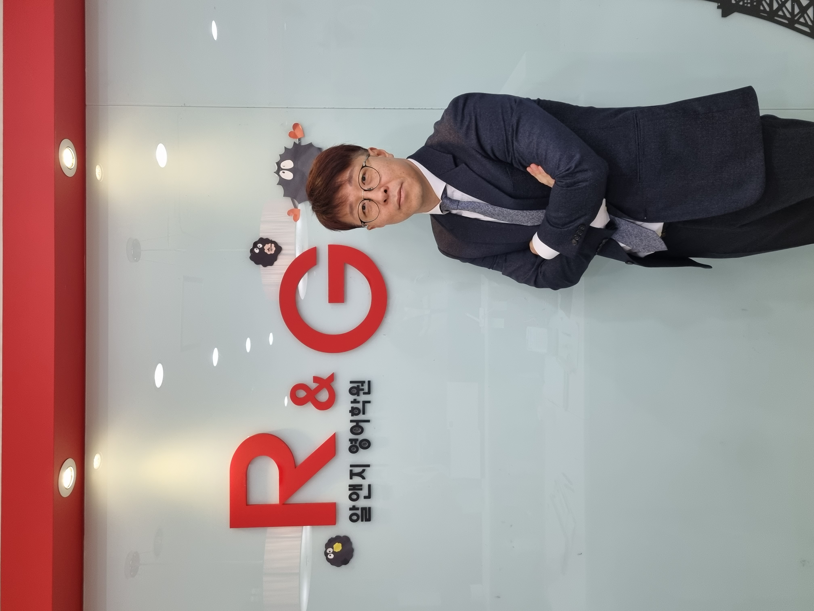

원장 선생님
부원장 선생님
알앤지 영어학원은
14년 동안 오직 영동일고만 해왔습니다.
| 시간 | 월/금 2개반 | 화/목 2개반 |
|---|---|---|
| 수업 (5:30~7:30) | 내신대비 | 내신대비 |
| 클리닉 (7:30~9:30) | 클리닉 테스트 | 클리닉 테스트 |
| 시간 | 수요일반 |
|---|---|
| 수업 (6:30~9:30) | 내신진도 |
| 클리닉 | 주중 학생이 원하는 시간에 테스트 |
| 시간 | 일요일반 |
|---|---|
| 수업 (9:30~12:30) | 내신진도 |
| 클리닉 | 주중 학생이 원하는 시간에 테스트 |
※ 2학기도 더 좋은 결과가 나오도록 열심히 준비하겠습니다.